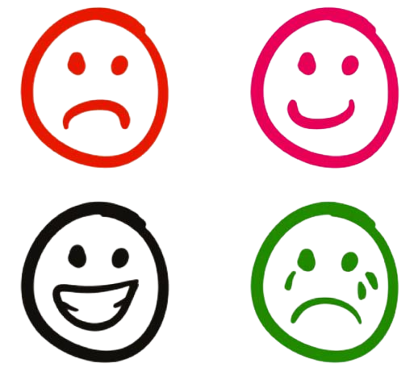

Apoyo para tratar las emociones.
Inteligencia Artificial creada con la finalidad de ayudar a las personas emocionalmente. Las emociones son reacciones psicofisiológicas que damos como respuesta a estímulos externos. Son de corta duración, pero de gran intensidad. Ellas influyen en las experiencias o conocimientos que adquirimos a lo largo de nuestra vida.
Psicologos Profesionales

Lic. Marjorie Esquivel
Psicóloga ubicada en Plaza Paitilla, Piso 2.
Consulta: 55$
Teléfono: 6980-2202
Horario de Lunes a viernes de 5:30 p.m a 7:30 p.m y sábado 8:30 p.m a 11:30 p.m.

Rubén Díaz
Psicólogo ubicado Ave. Justo Arosemena, Calle 38, Consultorio 108, Primer Piso.
Consulta: 70$
Teléfono: 6850-5142
Horario de Miércoles y Jueves de 8:00 a.m a 8:00 p.m.

Yilka Berrio
Psicólogoa ubicada San Miguelito Panamá.
Consulta: 75$
Teléfono: 6427-8069
Horario de Lunes a Sábado de 7:00 a.m a 2:00 p.m.
Emociones principales
Haga click para más información
Componentes de las emociones.
- Temblor.
- Sudoración.
- Sonrojarse.
- Acciones y gestos.
- Dilatación pupilar.
- Respiración agitada.
- Expresiones faciales.
- Comunicación no verbal.
- Distancia entre personas.
- Aumento del ritmo cardíaco.
Funciones
- Función adaptativa: Prepara al organismo para la acción siendo esta una de las más importantes. Gracias a esta capacidad podemos actuar eficazmente.
- Función social: Expresan el estado de ánimo y facilitan la interacción social para que se pueda predecir el comportamiento.
- Función motivacional: Existe una relación entre motivación y emoción, ambas se retroalimentan. Cualquier conducta motivada produce una reacción emocional, a la vez que cualquier emoción impulsa la motivación hacia algo.
Inteligencia emocional.
Es conectar las emociones con uno mismo, saber qué es lo que siente, poder ver tanto a uno mismo como a los demás de forma positiva.
Algunas personas se le hacen más fácil identificar sus emociones, mientras que a otros se le dificulta y las reprimen.
Una persona emocionalmente inteligente es positiva, tiene empatía y posee suficiente autoestima, es capaz de reconocer y expresar sus sentimientos positivos y negativos, pero también controlarlos.
Está compuesto por los siguientes elementos:
Las emociones en el aprendizaje.
Influyen en la capacidad de razonamiento, la memoria, la toma de decisiones y la actitud para aprender. Por ende, se considera que las emociones forman parte del proceso de aprendizaje. Sin embargo, cabe aclarar que emociones como la alegría se asocian con el crecimiento y una mejora en la fijación del aprendizaje. Así, cuando el ambiente escolar es positivo, el cerebro emocional responde mejor a los estímulos externos. Como resultado, el conocimiento se absorbe más fácilmente y el conocimiento adquirido se retiene por más tiempo.